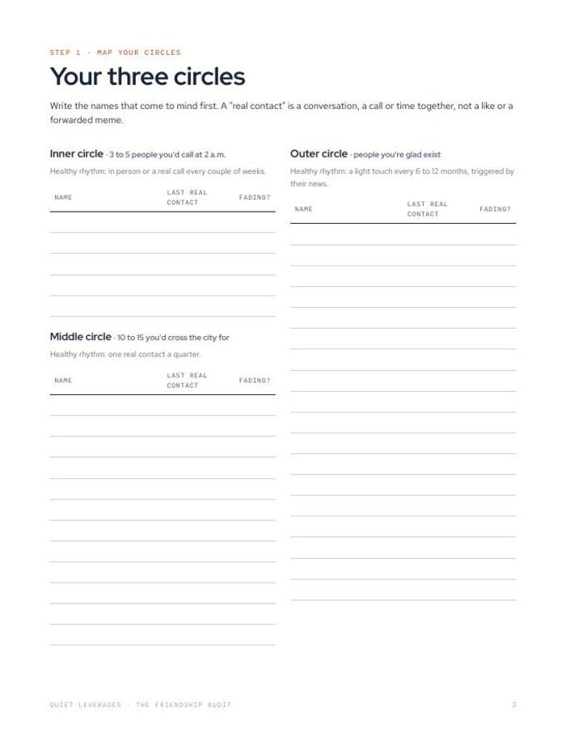
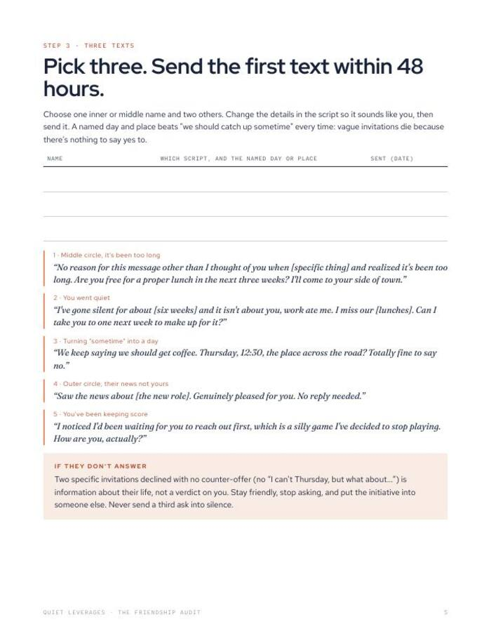

Most friendships don't end. They fade, because both people are waiting for the other to reach out.
Map your inner, middle and outer circles in ten minutes, see exactly who is fading, and leave with three texts to send this week.
PDF + Google Sheet. No email wall, no course. Fill it in tonight.

See who is fading
Rank up to 25 people by closeness. The sheet flags the ones you have drifted from.
Ten minutes, on paper
A printable audit you can finish before dinner. No app, no login.
Three texts to send
You finish with named people and a message for each, not a vague plan to 'reach out more'.
to complete
people you can map
texts to send this week
In-person time with friends fell from about 60 minutes a day in 2003 to about 20 in 2020. Friendships rarely end; the time just stops being scheduled.
American Time Use Survey dataWhat you leave with
A clear picture of your circles
Inner, middle and outer circles on one page, so you know who actually holds your week together.
Fading, flagged for you
The Google Sheet finds who is slipping, so you do not have to remember to notice.
A first move that is small
Three short texts, written this week, to people who would likely be glad to hear from you.
A way into the full practice
If the audit shows a gap, The 30-Day Friendship Practice picks up exactly where it ends.
A printable and a sheet that does the sorting
Both versions cover the same audit. Use paper if you think better with a pen, the sheet if you want the fading list built for you.
- Printable audit (PDF). Map your circles and mark who is fading.
- Google Sheet. Enter up to 25 people and it finds who is fading.
- Three-texts page. Who to message this week, and what to say.
- Built from The Social Architecture Playbook by Quiet Leverages.


Ten minutes, three moves
Map your circles
List the people in your inner, middle and outer circles.
Mark who is fading
Note the last time you spoke. The sheet flags the drift.
Pick three texts
Choose three people and write one line to each.
A good fit if your calendar went quiet
Use this if
- You moved cities, changed jobs or had a baby and your circle thinned out.
- You think 'we should get together sometime' and then it does not happen.
- You want a small first step, not a social overhaul.
Skip it if
- You want a full programme of daily drills. See The 30-Day Friendship Practice.
- You are looking for therapy or clinical support. This is a planning tool.
- You want a motivational read. This is a worksheet you fill in.
Why friendships drift, in numbers
of adults aged 30-44 are frequently or always lonely, the highest of any age group.
Harvard Making Caring Common, 2024of Americans have no close friends, up from 3% in 1990.
Survey Center on American Life, 2021of time together to move from acquaintance to casual friend; about 200+ to a close friend.
Jeffrey Hall, University of Kansas, 2018What readers say about The Friendship Audit
Take the audit tonight
It is free, and it takes ten minutes. If you want to keep going after, the next step is ready.
- Printable audit (PDF)
- Google Sheet that finds who is fading
- Three texts to send this week
Before you decide
Is it really free?
Yes. Gumroad lets you pay what you want, starting at $0. If it helps and you want to leave something, you can. You do not have to.
How long does it take?
About ten minutes. Start on page 2. You do not need to think about every person you have ever met, only up to 25.
Do I need Google Sheets?
No. The printable PDF does the whole job. The sheet only adds the automatic 'who is fading' list.
What if the audit shows I have very few people?
That is useful to know, and it is common. The audit shows where to start. The 30-Day Friendship Practice is built for exactly that, with one small drill a day.
Is this therapy or advice about loneliness?
No. It is a planning worksheet. General education only.
The next step after this one

Three texts this week, to people you already know.
The audit tells you who. The texts are up to you.
Get the free auditFree on Gumroad. Pay what you want from $0. Instant download.